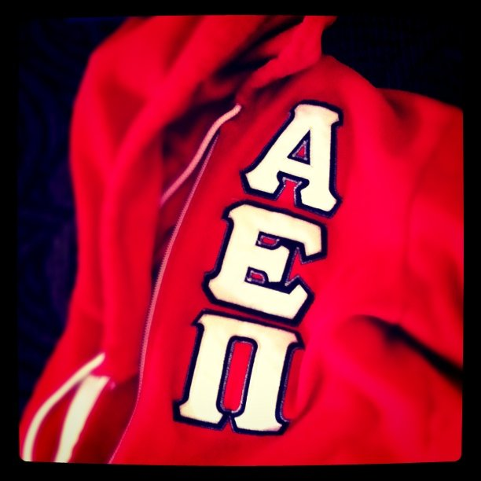
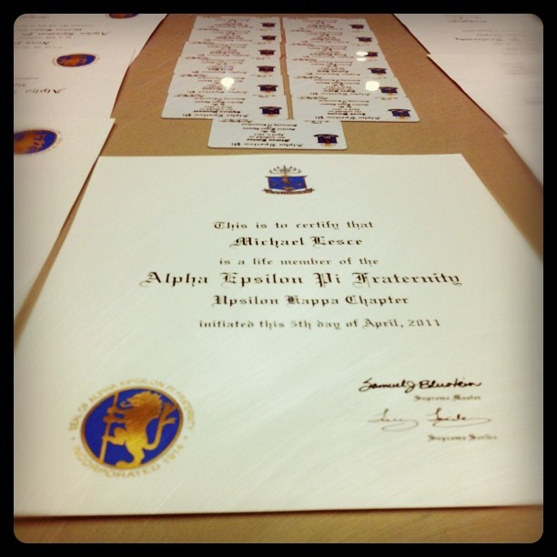

An ever-evolving timeline of my life from 2009 onward
2009
I enrolled at the University of Connecticut as an Honors student in 2009. Knowing I wanted to develop my leadership skills, I joined my fraternity, Alpha Epsilon Pi, my first semester at school.

2010

During the first few months of my sophomore year I took on two leadership roles within Greek Life. In my own chapter I was elected Secretary and at the community level I was elected to be the Interfraternity Council's VP of Financial Affairs.
After a year of performing my duties as Secretary, I was elected President of my fraternity. My term was spent leading a chapter of 94 brothers and helping shape the direction of Greek Life at UConn.
In my final semester of college I was honored as an Undergraduate Hall of Fame Student Fellow by the UConn School of Business. The nomination was given in recognition of my honors thesis, a project that led to the development of a modern web application used by more than 1,000 students.
After graduation I spent July in Michigan at training with other ITLPs. While there, we focused on a case study that involved building out a BI reporting tool for one of GE’s businesses.